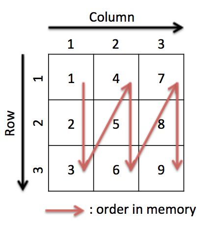
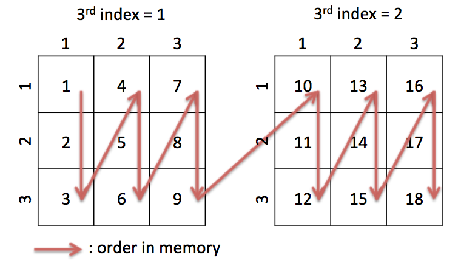

Indexing matrix and manipulating shape
Getting / setting elements of matrices and changing the way of viewing matrix are required in most applications. In this article, functions for these operations are described.
Indexing
The way of specifying element(s) of a matrix is called “indexing”. Sushi2 allows most operations supported by MATLAB, except for expanding the size of matrix.
Memory layout
To use some kind of operations correctly, you need to understand memory layout of how matrix elements are stored.

Elements of a matrix are stored in the memory sequentially. In Sushi2, adjacent elements in a column are stored to adjacent memory area (called column-major). The index of a element is represented as (row, column). For example, (2, 3) element of the matrix in figure is 8. Note that the index begins with 1, not 0.

A matrix can have more than 2 dimensions. When the matrix have N dimensions, the memory order can be considered as matrices of N-1 dimensions are concatenated. In this figure, (3, 1, 2) element of the matrix is 12.
Getting / setting single element
A.get(idx1, idx2), where A is a matrix and idx1, idx2 are scalar number, the expression returns the scalar number corresponding A(idx1, idx2).
A.set(idx1, idx2, val), where A is a matrix and idx1, idx2, val are scalar number, the expression sets the value of A(idx1, idx2) as val.
You can also use linear indexing, which specifies index in 1-dimensional memory layout.
In case of the matrix has more than two dimensions, the number of arguments increases corresponding to the number of dimensions.
> var A = $M.jsa2mat([[10,40,70],[20,50,80],[30,60,90]]);
undefined
> console.log(A);
Matrix 3x3 single
10 40 70
20 50 80
30 60 90
undefined
> A.get(2, 3);
80
> A.set(2, 3, 81);
undefined
> console.log(A);
Matrix 3x3 single
10 40 70
20 50 81
30 60 90
undefined
> A.get(5);
50
> A.set(5, 51);
undefined
> console.log(A);
Matrix 3x3 single
10 40 70
20 51 81
30 60 90
undefined
> var A = $M.jsa2mat([
... [[10, 20, 30],
... [40, 50, 60]],
... [[70, 80, 90],
... [100, 110, 120]]
... ]);//3D case
undefined
> A.get(1, 1, 1);
10
> A.get(1, 2, 1);
20
> A.get(2, 1, 1);
40
> A.get(1, 1, 2);
70
> A.get(2, 3);//equal to (2, 3, 1)
60
> A.get(2, 4);//assumes A reshaped into (2, 3*2)
100
> A.get(2, 3, 3);
Error: Invalid index
> A.set(10, 123);
undefined
> A.get(2, 2, 2);
123
$M.jsa2mat works intuitively for 2D case. When the input array is more than 2 dimensions, it works as follows.
- 2Dmatrix is like [[1,2],[3,4]]
- [2Dmatrix_1, 2Dmatrix_2] becomes 3D matrix A, and A(i, j, 1) == 2Dmatrix_1, A(i, j, 2) == 2Dmatrix_2.
- [[2Dmatrix_11, 2Dmatrix_12], [2Dmatrix_21, 2Dmatrix_22]] becomes 4D matrix A, and A(i, j, z, w) == 2Dmatrix_wz.
- Input can be more than 4 dimensions. Index for outer array becomes later dimension of corresponding matrix.
Getting / setting multiple elements
You can access to a subset of matrix by some ways.
First way is using colon expression.
$M.colon(start, stop) generates a colon object, which defines a range of indices.
> var A = $M.jsa2mat([[10,40,70],[20,50,80],[30,60,90]]);
undefined
> A.get($M.colon(2,3), 3);
Matrix 2x1 single
80
90
In this case, row 2 to 3 (both edges are included) and column 3 is selected.
You can also set a matrix or scalar to the selected location.
> A.set($M.colon(2,3), 3, $M.jsa2mat([[100],[110]]));
undefined
> A
Matrix 3x3 single
10 40 70
20 50 100
30 60 110
> A.set($M.colon(2,3), 3, 123);
undefined
> A
Matrix 3x3 single
10 40 70
20 50 123
30 60 123
$M.colon() represents whole range, and $M.colon(start, step, stop) represents range with skipping elements or reversing.
> var A = $M.jsa2mat([[10,40,70],[20,50,80],[30,60,90]]);
undefined
> A.get($M.colon(), 2);
Matrix 3x1 single
40
50
60
> A.get($M.colon(2, $M.end), 2);
Matrix 2x1 single
50
60
> A.get($M.colon());
Matrix 1x9 single
10 20 30 40 50 60 70 80 90
> A.get($M.colon(2, 2, 8));
Matrix 1x4 single
20 40 60 80
> A.get($M.colon(8, -1, 2));
Matrix 1x7 single
80 70 60 50 40 30 20
These rule are same for matrices with more than 2 dimensions. However, user should remember that tailing dimension with size 1 is automatically removed.
> var A = $M.jsa2mat([
... [[10, 20, 30],
... [40, 50, 60]],
... [[70, 80, 90],
... [100, 110, 120]]
... ]);//3D case
> A.get($M.colon(), $M.colon(), 1);
Matrix 2x3 single
10 20 30
40 50 60
// not 2x3x1
> A.get(1, $M.colon(), $M.colon());
Matrix 1x3x2 single
10 20 30
// not 3x2
Second way is using a matrix containing linear index. A.get(B) generates new matrix C with same size as B. C satisfies the expression C.get(i) == A.get(B(i)).
> var A = $M.jsa2mat([[10,40,70],[20,50,80],[30,60,90]]);
undefined
> A.get(3);
30
> A.get(5);
50
> A.get($M.jsa2mat([3,5]));
Matrix 1x2 single
30 50
Third way is using a logical matrix. A.get(B) extracts elements of A into a vector, if the value of corresponding position in B is 1.
A logical can be generated by compare functions.
> var A = $M.jsa2mat([[10,40,70],[20,50,80],[30,60,90]]);
undefined
> var B = $M.gt(A, 40);//A>40
undefined
> B
Matrix 3x3 logical
0 0 1
0 1 1
0 1 1
> A.get(B);
Matrix 5x1 single
50
60
70
80
90
Operations of matrix shape
### size
$M.size(A) gives a row vector which contains the number of elements along each dimension of matrix A.
$M.size(A, dim) gives a scalar number which represents the number of elements along dimension dim of matrix A.
$M.sizejsa(A) is similar to $M.size(A), but it returns JavaScript array.
> var A = $M.jsa2mat([[10,20,30],[40,50,60]]);
undefined
> $M.size(A);
Matrix 1x2 int32
2 3
> $M.size(A, 2);
3
> $M.sizejsa(A)
[ 2, 3 ]
numel
$M.numel(A) gives the total number of elements of matrix A.
> var A = $M.jsa2mat([[10,20,30],[40,50,60]]);
undefined
> $M.numel(A);
6
ndims
$M.ndims(A) gives the number of dimensions of matrix A.
> var A = $M.jsa2mat([[10,20,30],[40,50,60]]);
undefined
> $M.ndims(A);
2
> var A = $M.jsa2mat([
... [[10, 20, 30],
... [40, 50, 60]],
... [[70, 80, 90],
... [100, 110, 120]]
... ]);//3D case
> $M.ndims(A)
3
squeeze
$M.squeeze(A) removes dimensions of size 1 from matrix A and returns new matrix.
> var A = $M.rand(2, 3, 1, 4);
undefined
> $M.size(A);
Matrix 1x4 int32
2 3 1 4
> var B = $M.squeeze(A);
undefined
> $M.size(A);
Matrix 1x4 int32
2 3 1 4
> $M.size(B);
Matrix 1x3 int32
2 3 4
A.squeeze_inplace() changes matrix A itself.
> A.squeeze_inplace();
undefined
> $M.size(A);
Matrix 1x3 int32
2 3 4
reshape
$M.reshape(A, sz1, sz2...) changes the shape of matrix A. The number of elements must be same as original matrix.
One argument can be -1, which is replaced to proper value to keep the number of elements.
The underlying memory layout is kept when reshaping.
> var A = $M.jsa2mat([[10,20,30],[40,50,60]]);
> $M.reshape(A, 1, 6);
Matrix 1x6 single
10 40 20 50 30 60
> $M.reshape(A, 6, 1);
Matrix 6x1 single
10
40
20
50
30
60
> $M.reshape(A, 3, -1);
Matrix 3x2 single
10 50
40 30
20 60
transpose
$M.transpose(A) or $M.t(A) transposes matrix A. Only applied to 2-dimensional matrix.
> var A = $M.jsa2mat([[10,20,30],[40,50,60]]);
> $M.t(A)
Matrix 3x2 single
10 40
20 50
30 60
> A
Matrix 2x3 single
10 20 30
40 50 60
permute
$M.permute(A, axes) changes the order of axes of matrix A. This is generalized version of transpose.
$M.ipermute(A, axes) is inverse function of permute.
> var A=$M.jsa2mat([[[10, 20, 30],[40, 50, 60]],[[70, 80, 90],[100, 110, 120]]]);
undefined
> $M.size(A)
Matrix 1x3 int32
2 3 2
> var B = $M.permute(A, [2, 1, 3]);// order of axes becomes [2, 1, 3] from [1, 2, 3]
undefined
> $M.size(B);
Matrix 1x3 int32
3 2 2
> A.get(2,3,1);
60
> B.get(3,2,1);
60
> var C = $M.ipermute(B, [2, 1, 3]);
undefined
> $M.size(C);
Matrix 1x3 int32
2 3 2
> $M.isequal(A, C);
true